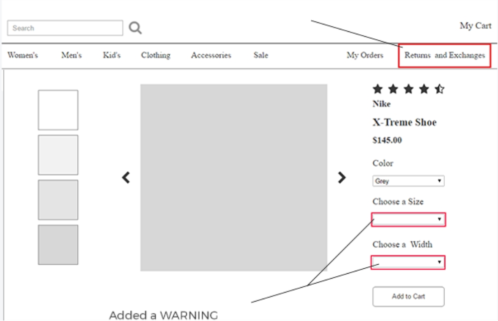

eCommerce
Eye-tracking the online shopping experience
Objectives
- Create user tasks and analyze where user mistakes most often occur while shopping.
- Create a prototype that offers design solutions.
Summary
This Project examined the use of eye-tracking technologies. Nielsen's heuristics and the System Usability Scale were used to measure user reports and eye tracking metrics provided quantitative data to help build a new eCommerce prototype.
Tasks & Responsibilities
Facilitate user testing sessions & Develop a prototype that provides solutions to common mistakes made by users while shopping.
Tools / Methods
System Usability Scale, Nielsen Heuristics, SPSS, Gazepoint Eyetracker.
User Tasks & Questionnaires
We mapped each System Usability Scale question to Nielsen Heuristics to categorize the types of user error.
Discovery
Each usability test had randomized tasks and required the user complete the System Usability Scale (SUS) questionnaire upon completion.
 Debriefing form
Debriefing formDiscovery
Reviewing The eye tracking software showed us where users were making mistakes. These screenshots illustrate the users unsuccesfully filling out the size, color, and width before adding to cart.
Wireframe Solution
Using Axure we made a basic wireframe to illustrate design solutions to address usability issues discovered during user testing.
Consent FormTake Aways
- We learned that despite eCommerce websites having well established consistencies and standards, there are still improvements to the UI that can make for a better user-experience.
- We were able to set up an eye-tracking lab environment and facilitate usability tests for over 30 participants.
- We created user tasks that exposed usability issues for popular eCommerce websites.
- We experienced challenges with calibrating user’s eye movements and maintaining proper user positioning throughout the duration of user testing.